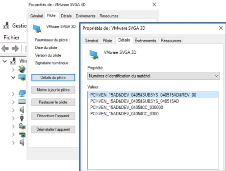
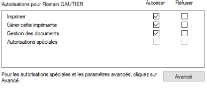
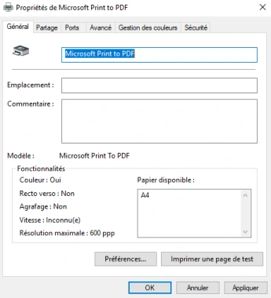
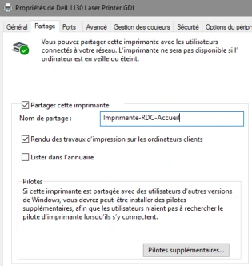
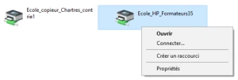
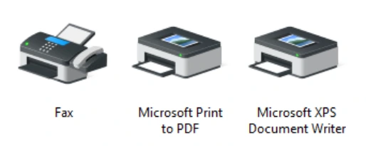
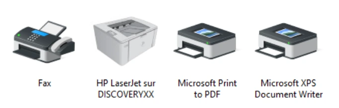
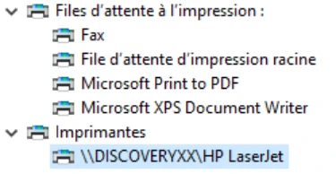

Module 09 — Les pilotes et les imprimantes¶
La transcription du support Drive et l’aide pédagogique sont séparées pour rendre leur provenance explicite.
SOURCE DRIVE · TRANSCRIPTION DU SUPPORT
Le contenu des documents du dossier TSSR est transcrit ci-dessous, page par page. Les textes et tableaux sont intégrés à la page Web. Aucun fichier PDF, aucune diapositive entière ni aucune reproduction de page n’est affiché. Seuls des croquis ou visuels isolés et vérifiés peuvent accompagner la transcription. Les versions et les consignes restent celles des supports de formation. Les compléments IA sont conservés dans leur onglet distinct.
Support · Module 09 - Support de cours · 9 pages transcrites
Systèmes clients Microsoft
Module 09 – Les pilotes et les imprimantes
Objectifs
- Définir un pilote
- Windows et les pilotes
- Windows et les imprimantes
- Utiliser, configurer une imprimante
- Partager une ressource « imprimante »
Pilotes
- Prise en charge du matériel
- Plug and Play : prise en charge « à chaud »
- Non Plug and Play : nécessite un redémarrage (plus rare)
- Plusieurs modes de prise en charge
- Détection et installation automatique
- Détection et installation manuelle
- Affichage et paramétrage
- Outil Gestionnaire de périphériques
- Devmgmt.msc
Gestionnaires de périphériques
- Affichage des composants pris en charge et non pris en charge
- Mettre à jour, désactiver, désinstaller
- Fonctionnalités avancées : Restaurer le pilote, informations détaillées, paramètres


Pilotes
- Pour la gestion des composants matériel et logiciel
- Spécifiques à chaque architecture : 32 bits ou 64 bits
- Les pilotes signés sont privilégiés par Microsoft
- Les certificats sont délivrés par Microsoft ou générés en suivant les procédures fournies par Microsoft
- Ils permettent de garantir la stabilité des systèmes
- Ils sont obligatoires pour les éditions 64 bits
- Les principaux fichiers
- *.inf : définition du pilote au format texte
- *.sys : pilote lui-même
- *.cat : certificat fourni par Microsoft ou un tiers de confiance
- *.exe, *.dll, *.xml… : fichiers complémentaires selon les besoins
Pilotes
- La prise en charge se fait à partir du fichier INF
- Directement depuis le fichier (clic droit Installer)
- À partir d’un assistant d’installation (setup.exe) ou de mise à jour
- Une fois installé, le pilote est mémorisé par le système
- Permet sa réinstallation automatique
- Fichiers INF dans C:\Windows\inf
- Chaque pilote installé manuellement génère un fichier oemXX.inf
- Autres fichiers dans C:\Windows\system32 et C:\Windows\sysWOW64
- Le magasin de pilotes Windows
- Pour une prise en charge immédiate du matériel (installation du système)
- Emplacement : C:\Windows\System32\DriverStore
- Gestion du magasin en ligne de commande avec pnputil
Pilotes
En complément
- msinfo32 pour le détail du matériel
- driverquery : outil CMD pour lister les pilotes installés
- driverquery /SI pour lister les pilotes signés
- pnputil : gestion du magasin de pilotes (ajout, suppression, information)
- pnputil /enum-drivers pour lister les pilotes tiers (oemXX.inf)
- pnputil /add-driver pilote.inf pour ajouter un pilote au magasin
Démonstration
Imprimantes
| Vocabulaire | Définition du support |
|---|---|
| Périphérique d’impression | Le matériel : moteur permettant de sortir la feuille imprimée. |
| Imprimante | Le logiciel : envoie l’ordre d’impression au périphérique d’impression (pilote, configuration, file d’attente d’impression, port d’impression). |
| File d’attente d’impression | Service spouleur : conversion numérique du document dans un langage interprétable par le périphérique d’impression. Envoi du job vers le port d’impression. |
| Imprimante locale | Périphérique d’impression directement relié à l’ordinateur via un port local. |
| Imprimante partagée | Imprimante locale partagée sur le réseau grâce à l’OS de l’ordinateur. Disponible si et seulement si l’ordinateur est allumé. |
| Imprimante réseau | Imprimante indépendante. Possède son propre OS, une interface réseau, un service web pour la configuration. |
Imprimantes
Imprimante locale
- Directement reconnue par le système
- Utilisation d'un pilote générique du magasin de pilote
- Possibilité d'installer le pilote signé du constructeur pour plus de fonctionnalités
- Sécurité NTFS de l'imprimante
(Propriétés de l'imprimante onglet Sécurité)


Imprimantes
Imprimante locale
- Disponible via le composant du Panneau de configuration
- Visualiser la file d'attente et autres options
- Éditer les propriétés de l'imprimante
- Informations générales
- Options avancées (horaire de production, priorité…)
Imprimantes
Imprimante locale
- Disponible via le composant du Panneau de configuration
- Visualiser la file d'attente et autres options
- Éditer les propriétés de l'imprimante
- Informations générales
- Options avancées (horaire de production, priorité…)
- Partager l'imprimante locale sur le réseau
- Disponible et utilisable via le réseau de l'entreprise
- Accessible depuis le chemin UNC : \\serveur\imprimante
- Disponible si l'ordinateur hôte est allumé
- Les droits NTFS s'appliquent




Imprimantes
Imprimante réseau
- Les imprimantes sont généralement raccordées au réseau de l’entreprise
- Le service de rôle Serveur d’impression pour
- Partager plusieurs imprimantes
- Centraliser la gestion des imprimantes
- Simplifier l'accès et la gestion des imprimantes
Réseau
Depuis le client
- Accès au serveur d'impression depuis le chemin UNC
- …puis connecter…
Imprimantes
Le spouleur d'impression
- Programme qui gère la file d'attente
- Envoie les travaux d'impression au périphérique d'impression
- Peut être déplacé via une clé de la base de registre
Créer un pool d'impression
- Imprimante connectée à plusieurs périphériques d'impression
- Distribuer automatiquement les travaux d'impression à la prochaine imprimante disponible
- Réduit les délais d'attente des documents pour les utilisateurs.


Démonstration
TP
Conclusion
- Les périphériques ont besoin
- D’une liaison à un ordinateur
- Liaison locale
- Liaison réseau
- Les ordinateurs ont besoin
- D’un « mode d’emploi » du périphérique
- Les imprimantes sont des ressources à part entière
Référence du document : 1yLnisoK5zTai4MhKpPNzNqRt4iXBSVHH · SHA-256 f5f6f49eafb0aeb3…
Énoncé · Enonc‚ du TP - Les pilotes et les imprimantes · 4 pages transcrites
Systèmes Clients Microsoft Les pilotes et les imprimantes
TP du Module 09 – Les pilotes et les imprimantes
Au cours de ce TP, vous serez amené à rechercher et à afficher des informations concernant les pilotes et les imprimantes de votre VM Windows 10 ainsi que de votre seconde VM. Votre seconde VM héberge une imprimante et il s'agira d'y accéder via le réseau, de l'installer et de vérifier sa présence sur votre système.
Durée estimée
1 heure
Énoncé
Lisez l'ensemble de cet atelier avant de vous lancer dans la pratique
Sur Win10-XX
- Avec la commande cmd.exe adaptée, générez les fichiers CSV suivants :
o Pilotes_detail.csv recensant les informations détaillées sur l’ensemble des pilotes
o Pilotes_signature.csv contenant les informations sur la signature des pilotes
- Vous pourrez ouvrir et convertir ces fichiers avec Excel
- Avec l'interface graphique
o Affichez les informations détaillées sur le pilote graphique avec la console MMC adaptée. Retrouvez le VENDOR_ID et le DEVICE_ID du périphérique.
Gestion des imprimantes Quelles sont les 4 imprimantes disponibles par défaut sur votre VM Win10-XX ? Les retrouvez-vous dans la console MMC adaptée ?
- Éditez les propriétés de l'imprimante Microsoft Print to PDF
o Faites en sorte que Microsoft Print to PDF soit définie comme imprimante par défaut. Sans configuration particulière, l'imprimante sortira des documents en orientation paysage. Imprimez une page de test pour vérification.
- Depuis votre VM Win10-XX, connectez-vous à l'imprimante partagée HP_LaserJet_Accueil_RDC_Bât2 disponible via Discovery.
o Attendez quelques minutes le temps que le pilote s'installe puis vérifier sa présence dans le panneau de configuration et dans la console MMC adaptée
Sur Discovery Gestion de configurations personnalisées
- À l'aide de PowerShell, afficher les informations par défaut concernant l'imprimante "HP LaserJet".
- Affichez maintenant les informations suivantes concernant "HP LaserJet" :
o Son nom
o Si elle est partagée ou non
o Le nom du partage
o Le nom du port
o Son emplacement
o Sa priorité
Solution
Une solution est proposée pour ce TP sous la forme d'un PDF commenté, disponible dans les ressources à télécharger.
Référence du document : 1gil6UWwobVqnHO-vdeev-U6K8dHlkDEa · SHA-256 ad95c9c4657c7087…
Correction · Solution du TP - Les pilotes et imprimantes · 4 pages transcrites
Correction originale : à consulter après avoir tenté l’exercice.
Les pilotes et les imprimantes
TP du Module 09 – Les pilotes et les imprimantes
Proposition de solution
Sur Win10-XX
- Avec la commande cmd.exe adaptée, générez les fichiers CSV suivants :
o Pilotes_detail.csv recensant les informations détaillées sur l’ensemble des
pilotes
o Pilotes_signature.csv contenant les informations sur la signature des pilotes
- Vous pourrez ouvrir et convertir ces fichiers avec Excel
driverquery /v /fo CSV > pilotes_details.csvdriverquery /si /fo CSV > pilotes_signatures.csvPossibilités d'ouvrir les fichiers CSV avec Excel
Sélectionner la colonne A
Menu Données
Convertir
Délimité > Suivant
Cocher Virgule
Terminer
- Avec l'interface graphique
o Affichez les informations détaillées sur le pilote graphique avec la console
MMC adaptée. Retrouvez le VENDOR_ID et le DEVICE_ID du périphérique.
Rechercher > devmgmt.msc
Déployez le nœud Cartes graphiques
Clic droit sur VMware SVGA 3D > Propriétés
Onglet Détails
Propriété ID compatibles
Le VENDOR_ID est 15AD
Le DEVICE_ID est 0405
Il est possible de se rendre sur le site www.pcilookup.com et d'y renseigner ces ID pour retrouver des informations sur le matériel en question.
Gestion des imprimantes
Quelles sont les imprimantes disponibles par défaut sur votre VM Win10-XX ? Les retrouvez- vous dans la console MMC adaptée ?
Panneau de configuration
Matériel et audio
Périphériques et imprimantes
Les imprimantes disponibles par défaut sont FAX, Microsoft Print to PDF, Microsoft XPS Document Writer
Dans la console Gestionnaire de périphérique
Nœud Files d'attente à l'impression, nous retrouvons nos imprimantes.
- Éditez les propriétés de l'imprimante Microsoft Print to PDF
o Faites en sorte que Microsoft Print to PDF soit définie comme imprimante par
défaut. Sans configuration particulière, l'imprimante sortira des documents en orientation paysage. Imprimez une page de test pour vérification.
Clic droit sur l'imprimante Microsoft Print to PDF > Définir comme imprimante par défaut
Clic droit sur l'imprimante Microsoft Print to PDF > Propriétés de l'imprimante
Préférence
Orientation : Paysage
OK
Imprimer une page de test


Cette imprimante est virtuelle et va sortir un document numérique au format PDF.
Indiquer le nom et l'emplacement du futur document (par exemple sur le bureau) et vérifiez qu'il est bien au format paysage
- Depuis votre VM Win10-XX, connectez-vous à l'imprimante partagée HP_LaserJet_Accueil_RDC_Bât2 disponible via Discovery
o Attendez quelques minutes le temps que le pilote s'installe puis vérifier sa
présence dans le panneau de configuration et dans la console MMC adaptée
Avec votre explorateur Windows, dans la barre de navigation, entrez le chemin UNC suivant \\@ ip de Discovery\HP_LaserJet_Accueil_RDC_Bât2
Renseigner les login / mdp de l'utilisateur adm lorsque vous êtes challengé.
Faites un clic droit sur HP_LaserJet_Accueil_RDC_Bât > Connecter…
Au bout d'un certain temps, la nouvelle imprimante partagée apparaît dans la liste des imprimantes dans le panneau de configuration.
Sur Discovery
Gestion de configurations personnalisées
- À l'aide de PowerShell, afficher les informations par défaut concernant l'imprimante "HP LaserJet"
Get-Printer -name "HP LaserJet"- Affichez maintenant les informations suivantes concernant "HP LaserJet" :
o Son nom
o Si elle est partagée ou non




o Le nom du partage
o Le nom du port
o Son emplacement
o Sa priorité
Get-Printer -Name "HP LaserJet" | select Name,Shared,ShareName,PortName,Location, PriorityRéférence du document : 124yp7LoB3rJdpK1_0wRpKCBh31RDAZAT · SHA-256 baa642b049964f05…
Complément IA / externe au cours — fiche pédagogique du portail
Cette fiche contient une reformulation et des aides d’apprentissage rédigées par IA. Elle est distincte de la transcription des documents du Drive et ne la remplace pas. Les schémas de synthèse de cette fiche sont des illustrations IA / externes au cours, sauf les captures explicitement attribuées à un document source.
Séquence : Systèmes clients Microsoft
Fil conducteur : comprendre le rôle du pilote, identifier un périphérique puis configurer et tester une ressource d’impression.
Objectifs¶
- Définir un pilote et choisir les outils de consultation adaptés.
- Distinguer architecture, signature, fichiers du pilote et magasin Windows.
- Séparer périphérique d’impression, imprimante logique, file et partage.
- Exporter les informations des pilotes, régler Print to PDF et installer l’imprimante partagée du TP.
1. Matériel, détection et pilote¶
Un pilote permet au système d’exploiter un composant matériel ou logiciel. Le support distingue le matériel Plug and Play, pris en charge « à chaud », du matériel non Plug and Play pouvant nécessiter un redémarrage. Détection et installation peuvent être automatiques ou manuelles.
Le Gestionnaire de périphériques, devmgmt.msc, montre les composants pris en charge ou non. Il permet de mettre à jour, désactiver ou désinstaller un périphérique, ainsi que de restaurer un pilote et d’examiner ses informations détaillées. Une installation visible et un matériel correctement exploité sont deux vérifications complémentaires.
Les pilotes dépendent de l’architecture, 32 ou 64 bits. Le support privilégie les pilotes signés et les relie à la stabilité du système ; il précise leur obligation pour les éditions 64 bits dans le contexte présenté.
2. Fichiers et magasin de pilotes¶
| Fichier | Rôle présenté dans le cours |
|---|---|
*.inf |
Définition du pilote au format texte, utilisée pour sa prise en charge. |
*.sys |
Pilote lui-même. |
*.cat |
Catalogue/certificat associé à la signature, fourni par Microsoft ou un tiers de confiance selon le support. |
*.exe, *.dll, *.xml… |
Fichiers complémentaires selon les besoins. |
L’installation peut commencer depuis le fichier INF, un programme setup.exe ou un assistant de mise à jour. Une fois installé, le pilote est mémorisé pour permettre sa réinstallation automatique. Le support cite C:\Windows\inf, avec les noms oemXX.inf pour les pilotes tiers installés, et d’autres fichiers sous C:\Windows\System32 ou C:\Windows\SysWOW64.
Le DriverStore, C:\Windows\System32\DriverStore, est le magasin de pilotes de Windows. Le cours présente pnputil pour sa gestion et msinfo32 pour le détail matériel.
Le nom pilote.inf représente le paquet du scénario. Lister les pilotes tiers et ajouter un paquet au magasin sont deux opérations différentes. Les exports du TP ci-dessous restent des opérations de consultation.
3. Le vocabulaire de l’impression¶
| Terme | Sens dans le support |
|---|---|
| Périphérique d’impression | Matériel qui produit la feuille. |
| Imprimante | Ressource logicielle comprenant pilote, configuration, file et port. |
| File d’attente / spouleur | Gestion des travaux, conversion vers un langage interprétable et envoi au port d’impression. |
| Imprimante locale | Périphérique relié directement au poste par un port local. |
| Imprimante partagée | Ressource locale publiée par l’OS d’un poste ; dépend de la disponibilité de cet hôte. |
| Imprimante réseau | Équipement autonome doté de sa propre interface réseau, de son OS et souvent d’une configuration web. |
Illustration IA / externe au cours — chemin logique d’un travail.
Une imprimante locale peut employer un pilote générique déjà présent dans le magasin ou un pilote signé du constructeur offrant davantage de fonctions. Ses propriétés donnent accès à la file d’attente, aux informations générales et aux options avancées : horaires de disponibilité et priorité, notamment.
4. Permissions, partage, serveur et pool¶
Le support montre l’onglet Sécurité avec les actions Imprimer, Gérer cette imprimante et Gestion des documents. Le partage rend une imprimante locale accessible par \\serveur\imprimante tant que l’hôte est disponible. Les utilisateurs accèdent au serveur depuis l’Explorateur puis choisissent Connecter.
Clarification externe — permissions de l’imprimante
Le support emploie l’expression « sécurité NTFS de l’imprimante ». L’objet imprimante possède en réalité ses propres droits d’utilisation et d’administration ; il ne s’agit pas de convertir l’imprimante en fichier NTFS. Droits d’accès aux imprimantes, Microsoft.
Le rôle Serveur d’impression centralise la publication et la gestion de plusieurs imprimantes. Le spouleur organise les travaux et les envoie aux périphériques ; le support indique que son emplacement peut être changé par un réglage du registre, sans fournir ici de procédure complète à appliquer.
Un pool d’impression relie une imprimante logique à plusieurs périphériques, pour distribuer les travaux au prochain disponible et réduire l’attente. Il faut distinguer cette distribution d’un simple partage d’une seule imprimante.
5. TP guidé — environ 1 heure¶
A. Exporter les informations des pilotes sur Win10-XX¶
La correction utilise deux commandes distinctes : l’une pour les détails, l’autre pour la signature.
/fo CSV choisit le format et > écrit le résultat dans un fichier. Ouvrir le CSV avec Excel ; si tout apparaît en colonne A, sélectionner cette colonne, choisir Données → Convertir → Délimité, puis le séparateur Virgule. Vérifier que les propriétés sont réparties en colonnes.
Écart de noms conservé
L’énoncé nomme Pilotes_detail.csv et Pilotes_signature.csv, alors que la correction utilise les pluriels pilotes_details.csv et pilotes_signatures.csv. Les commandes ci-dessus suivent la correction. L’objectif est le contenu des deux exports, avec des noms identifiés de façon cohérente.
Complément externe — options de driverquery
/v produit un affichage détaillé et /si des informations sur les pilotes signés ; ne pas les cumuler dans cet exercice. Référence Microsoft driverquery.
B. Identifier la carte graphique¶
- Ouvrir
devmgmt.mscet développer Cartes graphiques. - Ouvrir les propriétés de VMware SVGA 3D, onglet Détails.
- Consulter la propriété d’identification montrée par la correction, ID compatibles.
- Relever VENDOR_ID
15ADet DEVICE_ID0405dans cet exemple VMware.
La correction cite www.pcilookup.com comme outil de recherche de ces identifiants ; il reste une référence historique du support, et non une validation de la machine actuelle. Les valeurs identifient le composant de l’exemple, pas tous les matériels possibles.
C. Examiner les imprimantes puis régler Print to PDF¶
Dans Panneau de configuration → Matériel et audio → Périphériques et imprimantes, relever les imprimantes présentes ; les retrouver dans le nœud Files d’attente à l’impression du Gestionnaire de périphériques.
Différence entre l’énoncé et la correction
L’énoncé demande « les 4 imprimantes » par défaut. La correction et sa capture en montrent trois : Fax, Microsoft Print to PDF et Microsoft XPS Document Writer. Relever l’état réel de la VM ; une quatrième imprimante ne doit pas être inventée pour compléter le chiffre.
Pour Print to PDF :
- Choisir Définir comme imprimante par défaut.
- Ouvrir Propriétés de l’imprimante → Préférences.
- Choisir l’orientation Paysage puis valider.
- Imprimer une page de test.
- Comme il s’agit d’une imprimante virtuelle, choisir un nom et un emplacement pour le document produit, puis vérifier son orientation.
D. Connecter l’imprimante partagée de Discovery¶
Depuis l’Explorateur de Win10-XX, ouvrir le chemin de l’imprimante HP_LaserJet_Accueil_RDC_Bât2 publié par Discovery :
Remplacer le marqueur par l’adresse de la VM. Utiliser le compte demandé par le scénario lorsqu’une authentification est présentée, choisir Connecter, attendre l’installation du pilote puis vérifier la nouvelle imprimante dans le Panneau de configuration et dans la console adaptée. La correction abrège ponctuellement le nom en HP_LaserJet_Accueil_RDC_Bât : le nom réellement publié par Discovery fait foi pour le test.
E. Lire la configuration sur Discovery¶
Get-Printer -Name "HP LaserJet"
Get-Printer -Name "HP LaserJet" | Select-Object Name,Shared,ShareName,PortName,Location,Priority
| Propriété | Contrôle effectué |
|---|---|
Name |
Nom local de la ressource imprimante. |
Shared |
Publication en partage ou non. |
ShareName |
Nom utilisé dans le chemin réseau. |
PortName |
Port associé à la ressource. |
Location |
Emplacement renseigné. |
Priority |
Priorité de la ressource. |
Ne pas confondre Name et ShareName : le nom affiché localement peut différer du nom de publication. Vérifier le partage et l’installation côté client avant de conclure que l’accès fonctionne.
6. Mini-quiz — 5 questions¶
- Quel fichier définit un paquet de pilote au format texte ?
- Quelle console donne les détails d’un périphérique ?
- Pourquoi utiliser deux commandes pour les exports
driverquery? - Quelle différence entre imprimante partagée et imprimante réseau dans le vocabulaire du cours ?
- Quelle propriété PowerShell donne le nom publié en partage ?
Réponses commentées
- Le fichier
.inf. - Le Gestionnaire de périphériques,
devmgmt.msc. - Le TP distingue le détail des pilotes de leurs informations de signature.
- La première dépend de l’hôte qui la partage ; la seconde est un équipement autonome connecté au réseau.
ShareName, à distinguer deName.
Pour pratiquer et réviser¶
- TP — présentation
- Énoncé complet et correction
- Fiche de révision
- Kahoot existant
- Retour à la formation
Sources et choix éditoriaux¶
Support M09, énoncé et correction lus en lecture seule dans le Drive. Les divergences de nombres, de fichiers et de noms d’imprimante sont signalées ; les versions originales ne sont pas harmonisées artificiellement. Les tableaux, le schéma et le mini-quiz apportent une organisation pédagogique, et les clarifications Microsoft sont externes au support. Les captures utiles et les transcriptions figurent dans Cours Original.
M09 — Les pilotes et les imprimantes
20 questions
Teste tes connaissances sur ce module.